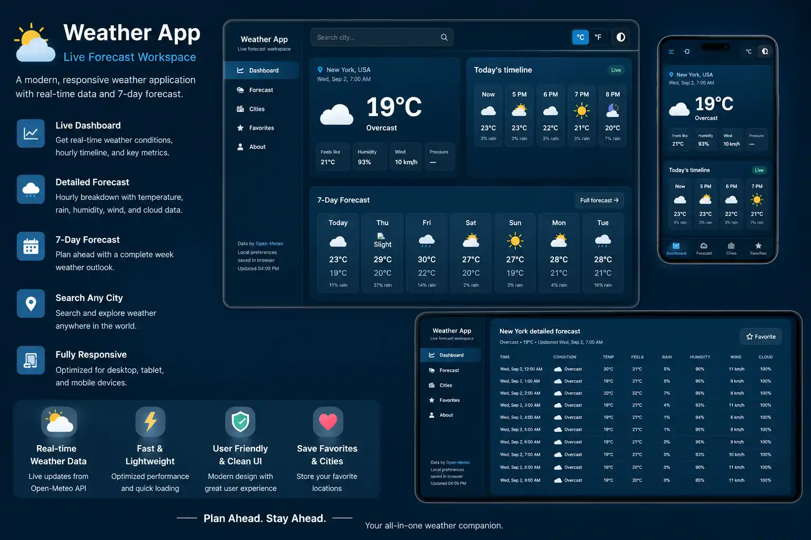

Weather App
A responsive weather experience that combines a clean information hierarchy with JavaScript-driven API data. The project focuses on city search, readable weather information, secondary weather details, responsive cards and a layout that remains useful from a small mobile screen to a wide desktop display.